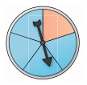

3.2 Wahrscheinlichkeiten und Baumdiagramme
Wie du wahrscheinlich schon bemerkt hast, können an den Zweigen des Baumes auch Zahlen notiert werden.

Dabei handelt es sich um die Wahrscheinlichkeit, mit der das jeweilige Teilergebnis zu erwarten ist. Die Wahrscheinlichkeit muss also schon bekannt sein. Ob du sie mit Hilfe des empirischen Gesetzes der großen Zahlen (also durch viele Wiederholungen eines Zufallsexperiments) herausgefunden hast oder sie Ergebnis einer theoretischen Überlegung ist (Laplace-Experiment), ist natürlich egal.
Im Beispiel des Münzwurfs sind die Teilergebnisse “Kopf” oder “Zahl” mit einer Wahrscheinlichkeit von \(\frac{1}{2}\) möglich. Dies gilt sowol für den ersten, als auch für den zweiten Münzwurf.
3.2.1 Produktregel
Wie ermittelt man nun die Wahrscheinlichkeit der zusammengesetzten Ergebnisse?
Betrachte noch einmal das Baumdiagramm für den zweifachen Münzwurf:
Zu jedem der vier zusammengesetzten Ergebnisse (\(\{KK,\; KZ,\; ZK,\; ZZ\}\)), gehört ein Pfad - die Stufen des Pfades sind dabei die einzelnen Teilergebnisse.
Wie hoch ist also die Wahrscheinlichkeit dafür, zweimal “Kopf” zu werfen? Der Pfad, der zu dem Ergebnis zweimal Kopf gehört, ist blau gefärbt. Bei jedem der beiden Würfe ist das Teilergebnis “Kopf” mit einer Wahrscheinlichkeit von \(\frac{1}{2}\) möglich. Die Wahrscheinlichkeit für das Ergebnis “Kopf-Kopf” (KK) ist also \(\frac{1}{2}\) von \(\frac{1}{2}\) und damit \(\frac{1}{2}\cdot\frac{1}{2}=\frac{1}{4}\).
Kurz und knapp fasst diese Überlegung die Produktregel oder auch Pfadmultiplikationsregel zusammen:
Produktregel:
Die Wahrscheinlichkeit für ein zusammengesetztes Ergebnis erhält man, indem man die einzelnen Wahrscheinlichkeiten entlang des zugehörigen Pfades multipliziert.
Natürlich gilt auch für mehrstufige Zufallsexperimente, dass sich die Wahrscheinlichkeiten aller zusammengesetzten Ergebnisse zu 1 (zu 100%) addieren.
Beispiel

Das Glücksrad wird zweimal gedreht. Ermittle die Wahrscheinlichkeit, dass es zweimal bei Rot stehen bleibt. Erstelle dazu ein Baumdiagramm.
Der Pfad ganz links stellt das Ergebnis “Rot-Rot” dar. Die Wahrscheinlichkeit für die Farbe Rot beträgt in jeder Drehung \(\frac{2}{3}\).
Nun multipliziert man die Einzelwahrscheinlichkeiten entlang des Pfades ganz links (das ist ja der Pfad, der zu “Rot-Rot” führt, erhält man die Wahrscheinlichkeit für “Rot-Rot” (RR).
\(P(RR)=\frac{2}{3}\cdot\frac{2}{3}=\frac{4}{9}\)
Aufgabe 1

Das Glücksrad wird zweimal gedreht.
Zeichne das zugehörige Baumdiagramm und notiere die Wahrscheinlichkeiten an den Zweigen.
Welche zusammengesetzten Ergebnisse sind möglich? Bestimme zudem jeweils die Wahrscheinlichkeit.
Kontrolliere deine Überlegungen: Ergibt die Summe der Wahrscheinlichkeiten der zusammengesetzten Ergebnisse 1 (100%)?
Aufgabe 2

Jim spielt mit Lukas Karten. Lukas hat acht Karten auf der Hand: je zwei Karten von jeder Farbe (also zweimal Herz, zweimal Pik, zweimal Karo und zweimal Kreuz). Jim darf nun sein Glück versuchen, er gewinnt, wenn er zweimal hintereinander Karo zieht.
Er zieht blind eine Karte, notiert das Ergebnis und gibt die Karte zurück. Lukas mischt seine Karten und Jim hat noch einen Versuch, blind eine Karte zu ziehen.
Erkläre, was das Ergebnis “Herz - Karo” bedeutet.
Zeichne ein Baumdiagramm und trage die Wahrscheinlichkeiten ein. Markiere den/die Pfad(e), die zu Gewinnen führen.
Nenne alle möglichen Ergebnisse und berechne ihre Wahrscheinlichkeiten.
Aufgabe 3
Charlotte spielt Basketball. Sie trifft den Korb beim Basketballfreiwurf mit einer Wahrscheinlichkeit von 0,6 und darf dreimal werfen.
Zeichne ein Baumdiagramm mit Wahrscheinlichkeiten.
Berechne die Wahrscheinlichkeit, dass Charlotte dreimal trifft.
Berechne die Wahrscheinlichkeit für das Ergebnis “Korb - kein Korb - Korb”.
Aufgabe 4

Die beiden Glücksräder werden gleichzeitig gedreht.
Zeichne ein Baumdiagramm, in dem das linke Glücksrad auf der ersten und das rechte Glücksrad auf der zweiten Stufe ist. Trage die Wahrscheinlichkeiten ein.
Zeichne ein Baumdiagramm, in dem das rechte Glücksrad auf der ersten und das linke Glücksrad auf der zweiten Stufe ist. Trage die Wahrscheinlichkeiten ein.
Berechne die Wahrschinlichkeit dafür, dass beide Glücksräder Rot zeigen. Verwende einmal das Baumdiagramm aus Teilaufgabe a) und einmal das aus Teilaufgabe b). Vergleiche die Ergebnisse.